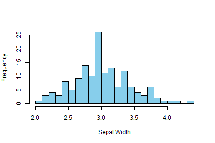

- This dataset contains some measurements of flower properties of three different species of iris.
- Often, but not always, real measurements like these conform to a classic normal distribution.
hist(iris$Sepal.Width, breaks = 20, col = "skyblue", xlab = "Sepal Width", main = "")
